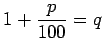
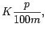
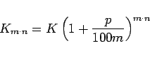
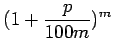
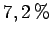

Bei jährlichem Zinszuschlag wächst ein Kapital K nach n Jahren auf den Endwert Kn. Am Ende des n-ten Jahres gilt:
Zur Abkürzung setzt man  und bezeichnet q als nominellen Aufzinsungsfaktor.
Man spricht von unterjähriger Verzinsung, wenn das Jahr in m gleich lange Zinsperioden unterteilt wird und die Zinsen bereits nach jeder dieser Zinsperioden dem Kapital K zugeschlagen werden. Der Zinszuschlag pro Zinsperiode beträgt dann  und das Kapital wächst nach n Jahren mit je m Zinsperioden auf
|  | (1.80) |
an. Den Term  bezeichnet man als effektiven Aufzinsungsfaktor.
| Beispiel |
|
Ein Kapital von 5000.-Euro, das mit  pro Jahr verzinst wird, wächst in 6 Jahren
|